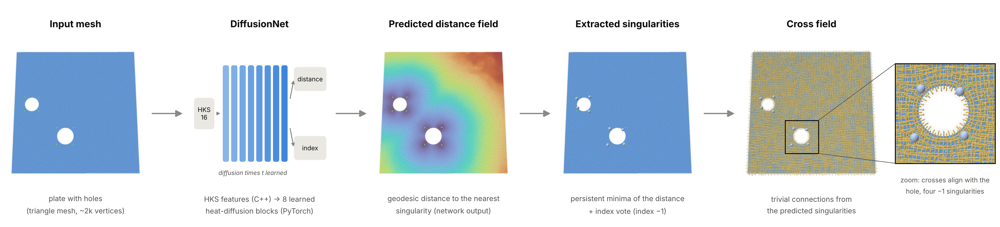
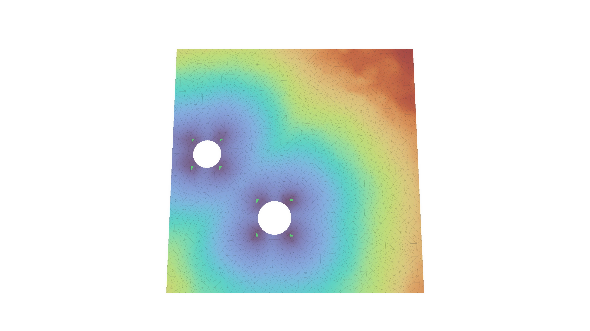
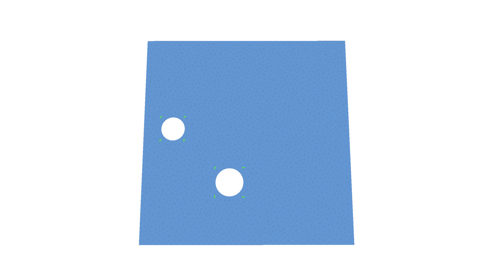
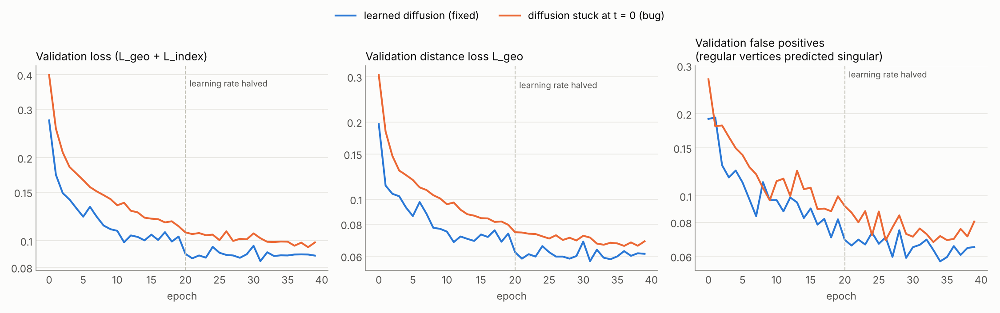
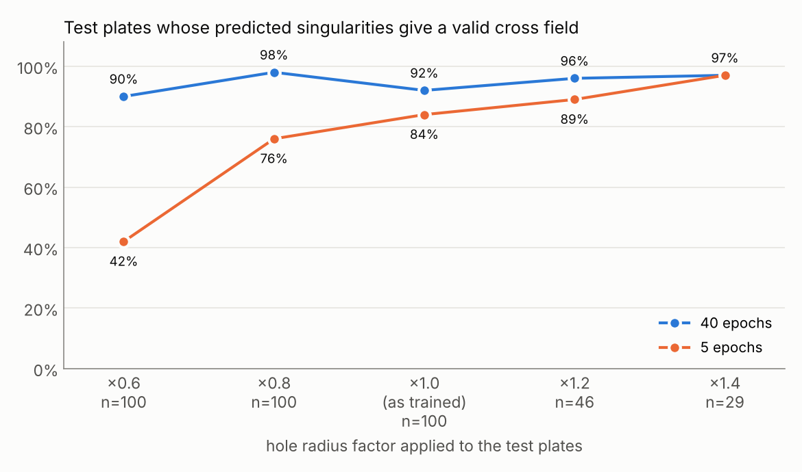
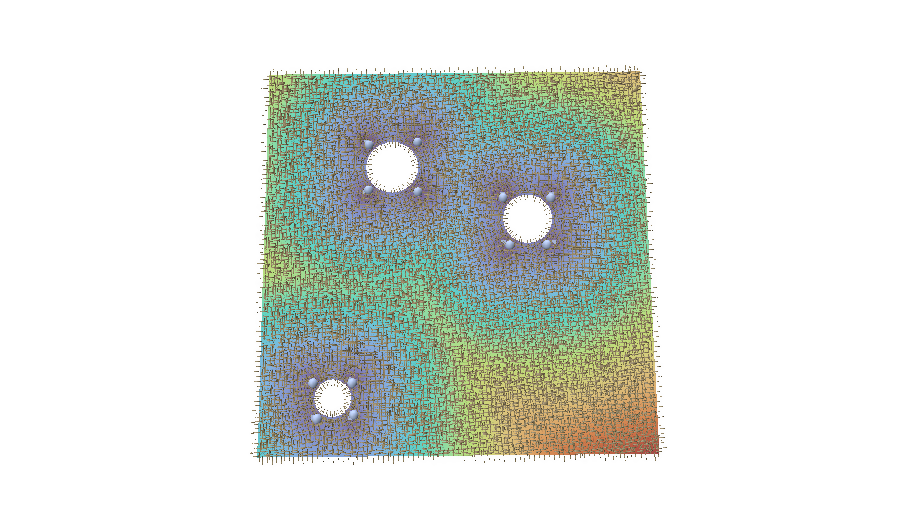
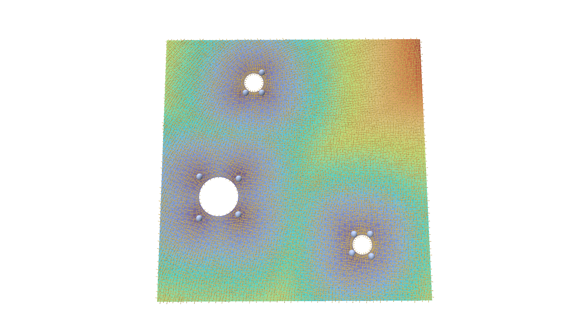

Nowerdays in graphics and geometry processing I see more and more people working on or with Neural Networks. And I thought it may actually be interesting to give it myself a try. And I should say this was a pretty cool and fun project.
I saw this year at Siggraph the presentation of the paper “Learning Sparse Singularities for Cross Field Design” from Xiaozhu Zhang, Hujun Bao, and Jin Huang and I should say that I like the idea of this article a lot. Because I feel plenty of learning papers do not really solve a problem by using learning and just use it for the sake of using learning.
Hpwever I thought in my research before in a more classical way about singularities for cross fields and it is indeed a hard problem. Therefore to use in here learning for the hard part – to predict where the singularities are – and then to rely on robust and well etablished traditional methods for the cross field generation from there on is something I wanted to try.
This post should document a bit my own learning process of how I used classic C++ and then pytorch in order to rebuild the pipeline proposed by Zhang et al.
One thing up front: I am not (yet) a big fan of doing geometry processing in Python. I feel the more natural home for geometry processing is in C++, and I want to keep it there. I saw the YouTube tutorial by Kavan, where he trains a humanoid to do backflips. In there the physics simulation is written in C++, and only the learning happens in PyTorch. It is a great video, I recommend to check it out here. That split made a lot of sense to me, so I asked myself whether something like that could be done for singularity predictionas well, i.e to treat the geometry in C++, learning in Python. Since Claude is getting better and better the entry barrier to smehow get started is also getting lower, so lets see what we can cook up!
The idea in one picture
A cross field assigns four orthogonal directions to every point of a surface. It is the backbone of most quad meshing pipelines. Almost everywhere the field is smooth, but at a few isolated points, the singularities, the directions rotate by a multiple of 90° when you walk once around them. These are exactly the irregular vertices of the final quad mesh (valence 3 or 5 instead of 4). Where they sit decides how the quad mesh looks, so in practice they are where the “art of design” lives.
The key insight of the paper is to not learn the cross field itself. A dense cross field can jump discontinuously when the shape changes slightly, which is very hard for a network. The singularities, on the other hand, move continuously. So the pipeline has two stages:
- A neural network predicts where the singularities are and which index they have.
- A classical, deterministic algorithm, trivial connections (Crane, Desbrun and Schröder 2010), builds the smoothest cross field with exactly these singularities.
A nice side effect: you don’t need cross fields as training data, only singularity annotations. And these can come from simple, hand-written rules. The network then learns your rule and applies it to new shapes.
C++ for geometry, PyTorch for learning
In the backflip project, C++ and Python talk over UDP at every simulation step, because reinforcement learning needs the simulator inside the training loop. My problem is plain supervised learning, so the two sides never need to run at the same time. The bridge is therefore just files: the C++ app writes one .npz file per mesh (NumPy’s format, written with the small cnpy library), and PyTorch reads it with np.load.
The C++ app (singlearn) has three commands:
singlearn prepare mesh.obj --sing mesh.singcomputes the network inputs and the training labels for one mesh and writes them to an.npzfile.singlearn predict mesh.obj --ckpt model.ptcomputes the inputs for a new mesh, hands them to a short Python script that runs the network, reads the prediction back, extracts the singularities and builds the cross field.singlearn tc mesh.obj --sing mesh.singskips the network and builds a cross field directly from given singularities. I use it to check whether my annotations are valid at all.
For the trivial connections I re-used some old code snippets and used then geometry-central for the implementation. The mesh data structures, the Laplacian and the geodesic distances come from geometry-central, and for the eigenvalue problem I use Spectra. For visual debugging, polyscope is wonderful. I added a mode where the app stops after every stage of the pipeline and shows what it currently has.

Input features: the heat kernel signature
A network that looks at vertex coordinates would give different answers for a rotated copy of the same shape. To avoid that, the paper uses only intrinsic quantities, and the standard choice is the heat kernel signature (HKS). Put one unit of heat at a point x, let it diffuse for a time t, and measure how much is still at x:
$$ \mathrm{HKS}(x,t) = \sum_i e^{-\lambda_i t}, \phi_i(x)^2 , $$
where $\lambda_i, \phi_i$ are the eigenvalues and eigenfunctions of the Laplace–Beltrami operator. Small t describes the neighbourhood of a point, large t its place in the whole shape. I sample 16 values of t between 0.01 and 1, which gives 16 numbers per vertex. In machine-learning language, this is the input feature vector of each vertex.
In C++ this means solving the generalized eigenvalue problem $L\phi = \lambda M \phi$ (cotan Laplacian L, lumped mass matrix M) for the 128 smallest eigenvalues. Spectra does this with a shift-invert solver:
using OpType = Spectra::SymShiftInvert<double, Eigen::Sparse, Eigen::Sparse>;
using BOpType = Spectra::SparseSymMatProd<double>;
OpType op(L, M);
BOpType Bop(M);
Spectra::SymGEigsShiftSolver<OpType, BOpType, Spectra::GEigsMode::ShiftInvert>
solver(op, Bop, k, ncv, /*sigma=*/-1e-3);
solver.init();
solver.compute(Spectra::SortRule::LargestMagn, 2000, 1e-10);
The HKS is then just a matrix–vector product per time:
Eigen::MatrixXd phi2 = ops.evecs.array().square();
for (int s = 0; s < nHKS; s++) {
double t = std::pow(10.0, -2.0 + 2.0 * s / (nHKS - 1)); // t in [0.01, 1]
Eigen::VectorXd w = (-ops.evals.array() * t).exp();
ops.hks.col(s) = phi2 * w;
}
Every mesh is first scaled to unit area, so the same t means the same thing on every shape.
On a flat plate the Gaussian curvature is zero everywhere, so the signal comes from the boundary. Heat cannot leave the domain, so it piles up near the boundary and especially in the corners. The small-t channels light up along the walls; the large-t channels vary smoothly across the plate.
The eigenvectors themselves are also stored in the file, because the network needs them too, as we’ll see below.
The data: plates with holes
To get started I used the simplest dataset of the paper: a square plate with circular holes. Each hole gets four singularities of index −1 (valence 5 in the quad mesh), placed at the corners of the hole’s axis-aligned bounding box. That is the “design rule” the network should learn. It is not what a classical solver would produce: it is a style choice, and that is exactly the point.
A small Python script, make_pch.py, generates these shapes. It samples non-overlapping holes, triangulates the plate with Shewchuk’s Triangle, applies the rule, and finally rotates and scales the whole shape randomly. The rule itself is just four lines:
for c, r in holes:
...
for sx in (-1, 1):
for sy in (-1, 1):
sings.append([c[0] + sx * r, c[1] + sy * r, -1]) # x, y, index
The script writes a mesh pch_0007.obj and an annotation file pch_0007.sing with one line x y z index per singularity. I also vary the triangle size from shape to shape, so the network doesn’t get used to one particular tessellation. For testing, the script can write every test shape at several hole sizes: the same holes, at the same positions, with the radius scaled by a factor between 0.6 and 1.4.

The labels: distance and oversampled index
The beautiful key idea of the paper in my opinion is that predicting “is this vertex a singularity?” directly is hopeless. If a plate has about 2,000–3,000 vertices but only a dozen singularities, so a network that always says “no” is already 99.5% right. Instead, the network regresses two fields that are defined on every vertex:
- Distance field: the geodesic distance from each vertex to the nearest singularity. Its local minima are the singularities. It is a dense, smooth target, much easier to learn.
- Oversampled index field: every vertex within a small geodesic radius of a singularity gets that singularity’s index; all other vertices get 0 (“regular”). This blows each singularity up from one vertex to about a hundred, which fixes the class imbalance.
In C++, prepare computes both with geometry-central’s heat method, one distance solve per singularity:
for (size_t s = 0; s < sings.size(); s++) {
VertexData<double> d = heat->computeDistance(mesh.vertex(sings[s].vertex));
for (Vertex v : mesh.vertices()) {
int i = v.getIndex();
if (d[v] < L.dist[i]) { L.dist[i] = d[v]; L.owner[i] = s; } // nearest singularity
}
}
for (int i = 0; i < n; i++)
if (L.owner[i] >= 0 && L.dist[i] <= radius)
L.cls[i] = classOf(sings[L.owner[i]].index); // oversampling
So for every vertex we store two labels, a distance and a class, next to the 16 input features. That is one training sample.
The network: DiffusionNet
The paper uses DiffusionNet (Sharp et al. 2022), and I re-implemented a compact version of it. What makes it work on meshes of any size and connectivity is that its weights are shared by all vertices. Each vertex carries a feature vector, and the same small layers act on every vertex. Information travels between vertices only through heat diffusion and surface gradients.
One DiffusionNet block does three things with the 128 feature channels of every vertex:
- Diffusion: each channel is diffused over the surface for its own learned time $t_c$. This is the heat equation again, solved exactly in the eigenbasis that C++ already computed: project onto the eigenfunctions, damp mode i by $e^{-\lambda_i t_c}$, and project back.
- Gradient features: a tangent gradient of the diffused features at each vertex, combined into rotation-invariant features. This lets the network sense directions, for example “towards the hole”.
- A small MLP combines the original, diffused and gradient features. Its output is added back to the input (a residual connection).
The diffusion step is only a few lines in PyTorch:
class LearnedTimeDiffusion(nn.Module):
def __init__(self, C):
super().__init__()
self.diffusion_time = nn.Parameter(torch.zeros(C)) # one learnable t per channel
def forward(self, x, mass, evals, evecs):
with torch.no_grad():
self.diffusion_time.clamp_(min=1e-8) # keep t >= 0
t = self.diffusion_time
x_spec = evecs.t() @ (x * mass.unsqueeze(-1)) # coefficients <phi_i, x>_M
x_spec = torch.exp(-evals.unsqueeze(-1) * t) * x_spec # heat flow for time t
return evecs @ x_spec # back to the vertices
The learnable parameters are therefore the diffusion times, the weights and biases of the linear layers, and the matrices of the gradient features: about 1.2 million numbers in total. The 16 HKS values of a vertex are first lifted to 128 channels, then pass through 8 such blocks, and come out as a 128-dimensional feature vector per vertex. Two separate MLPs (layer sizes 128 → 512 → 256 → output) turn this vector into:
- a distance: one number per vertex, kept non-negative with a softplus;
- an index distribution: the probabilities of the possible index classes. In general these are the indices −2, −1, 0, +1, +2, so a vector in ℝ⁵. For the plates only index −1 occurs, so the head reduces to two classes, regular or −1.
Training
Training is plain supervised learning. For each mesh, the network predicts both fields, and two losses compare them with the labels:
- a relative L1 loss on the distance, $|d/(\hat d + \varepsilon) - 1|$, which punishes errors close to a singularity the most, exactly where precision matters;
- a cross-entropy loss on the index class, where singular vertices weigh 100 times more than regular ones.
Backpropagation computes the gradient of the summed loss with respect to all 1.2 million parameters, and Adam takes a small step. The HKS, the eigenbasis and the gradient operators are constants in this process: they depend only on the mesh. So no gradient ever needs to flow back into C++, and once prepare has run, the C++ side is done.
I generated 500 training shapes with 1 to 3 holes, plus 50 validation shapes that I used only to pick the best checkpoint. Then I trained for 40 epochs (20,000 weight updates) on the GPU of my MacBook Air (PyTorch’s MPS backend), which took about half an hour:
python tools/make_pch.py --out data/train --n 500 --holes 1 2 3 --seed 0
python tools/prepare_all.py data/train data/train_npz --classes -1
python python/train.py --train data/train_npz --val data/val_npz --classes -1 --epochs 40 --out models/pch40.pt

Both losses go down smoothly, and training and validation stay close together, so with 500 shapes there is no sign of overfitting yet. The relative distance error on the validation set drops from 0.30 after the first epoch to about 0.066, and the share of regular vertices that the network wrongly calls singular falls from 27% to about 7%. The bump after epoch 20 is the learning rate being halved. The best validation loss was reached in epoch 38, so the model was still improving when training stopped.
The false-positive curve is the one to watch. The weight of 100 on singular vertices makes the network generous: the predicted “singular” blobs are fatter than the true discs. Where two singularities are close, their blobs merge, and that is exactly where things go wrong later.
The false-positive curve is the one to watch. The weight of 100 on singular vertices makes the network generous: the predicted “singular” blobs are fatter than the true discs. Where two singularities are close, their blobs merge, and that is exactly where things go wrong later.
Results on unseen shapes
To measure what the network really learned, I generated a separate test set of 100 plates that the network never saw during training. To probe how sensitive the method is to hole size, every test plate also exists in five variants: the same holes at the same positions, with all radii multiplied by 0.6, 0.8, 1.0, 1.2 or 1.4. At the large factors, holes start to overlap or leave the plate. Those variants are skipped, so only 46 plates remain at ×1.2 and 29 at ×1.4, most of them with a single hole.
For every test plate, singlearn predict runs the full pipeline, and I compare the result with the rule. A predicted singularity counts as correct if it lies within 0.05 (on the unit-area plate, about two edge lengths) of a true one. Three numbers come out:
- precision: the fraction of predicted singularities that are correct;
- recall: the fraction of true singularities that were found;
- valid: the fraction of plates whose predicted singularities can actually be connected into a cross field. Trivial connections tells us this: if the indices violate the Poincaré–Hopf theorem, the linear system has no solution. The last one is the number that matters in the end, and it is unforgiving. A single missing or extra singularity makes the whole configuration infeasible.
| radius factor | test plates | precision | recall | valid fields | valid, 5 epochs |
|---|---|---|---|---|---|
| ×0.6 | 100 | 0.995 | 0.983 | 90% | 42% |
| ×0.8 | 100 | 0.999 | 0.999 | 98% | 76% |
| ×1.0 | 100 | 0.994 | 0.986 | 92% | 84% |
| ×1.2 | 46 | 0.993 | 0.993 | 96% | 89% |
| ×1.4 | 29 | 0.993 | 1.000 | 97% | 97% |

With working diffusion and 40 epochs, between 90% and 98% of the test plates get a valid singularity configuration, at every hole size. Per singularity, precision and recall are above 98% everywhere. Diffusion helps most where it should: for the smallest holes, the share of valid plates goes from 60% to 90%. At ×0.6, the four corners of a hole sit close together, and their distance basins easily merge into one, so the network loses singularities. This is exactly the limitation the paper describes for closely spaced singularities. Telling them apart needs information from further away than a few rings of neighbours, and that is what diffusion provides. The 5-epoch model shows that training time matters just as much: it is decent at the training size (84%) but falls apart for small holes (42%).
The index was always predicted correctly, but that is no achievement here: on these plates every singularity has index −1.
What I find instructive is the gap between the per-singularity numbers and the per-plate number. A plate with three holes has 12 singularities, and all 12 must be right. Even at 99% per singularity, that happens for only about $\sqrt{0.99} ≈$ 89% of such plates. The pipeline is a chain, and the weakest link decides. The numbers by hole count confirm it: every single one-hole test plate is valid, at every radius factor, while at ×1.0 only 31 of 38 three-hole plates are. Of the 8 invalid plates at ×1.0, 7 have too few singularities and 1 has one too many. So the remaining failures are almost all merged singularities, typically between two holes that sit close together.
The large radius factors look surprisingly good, but be careful: those test sets are small and dominated by one-hole plates, the easy case.

Successful prediction: plate with three holes, predicted singularities on top of the true ones, and the cross field from trivial connections (polyscope).

Invalid prediction: for this example a three-hole plate the model does not predict properly a valid singularity configuration.
What I learned, and what comes next
For a first learning project, this was a lot of fun. With 500 synthetic plates and about half an hour of training on a laptop, the network learns a design rule for singularities and gets more than 90% of unseen plates completely right, including hole sizes it never saw.
The remaining failures are merged singularities on plates with several holes. That gives a clear list for what comes next:
- Data Diversity: Train on a wider range of hole sizes directly, rather than relying solely on zero-shot testing.
- Alternative Annotations: Experiment with the paper’s gear dataset, where applying two different annotation rules to identical shapes should yield distinct networks.
- Real-World Integration: Incorporate real data using singularities read directly from existing quad meshes (which the C++ application already supports).
- Full Pipeline Execution: Advance toward full quad mesh generation by feeding the cross field into a parameterization tool like MIQ for final quad extraction.
- 3D Prototyping: Explore a preliminary 3D prototype where training data can be generated using locally meshable frames and the AlgoHex pipeline.